Paper and writing workshops in Turin and around
Origami, collage, journaling, creative writing, calligraphy, lettering and poetry workshops and courses, plus book clubs, in Turin, Cuneo and around.
Search all workshops51 activities coming up · updated on 23 November 2026
 sat14novPaper and writingPossible worlds: collage and acrylic markersfrom Saturday 14 November to Saturday 19 December, 16:30–18:30Aurora (TO) · Pay what you likewith Gabriella Saiello at Cecchi Point
sat14novPaper and writingPossible worlds: collage and acrylic markersfrom Saturday 14 November to Saturday 19 December, 16:30–18:30Aurora (TO) · Pay what you likewith Gabriella Saiello at Cecchi Point tue24novFor familiesWinnie-the-Pooh: stories and gamesTuesday 24 November, 17:00–18:00Cuneo (CN) · Freewith Biblioteca 0-18 di Cuneo with Noau Officina Culturale
tue24novFor familiesWinnie-the-Pooh: stories and gamesTuesday 24 November, 17:00–18:00Cuneo (CN) · Freewith Biblioteca 0-18 di Cuneo with Noau Officina Culturale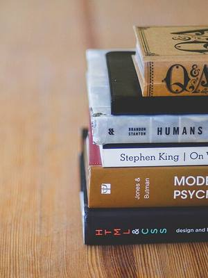
tue24novPaper and writingSarò breve: a book club for short readsTuesday 24 November, 19:00Quadrilatero (TO)with Cristina Terenzio at Le Altalene from10novPaper and writingCalligraphy course: three evenings with a nibfrom Tuesday 10 November to Tuesday 24 November, every Tuesday, 19:00–20:30Aurora (TO) · 25 € per lessonwith Noemi Venturino at Velvet Truffle Riot
from10novPaper and writingCalligraphy course: three evenings with a nibfrom Tuesday 10 November to Tuesday 24 November, every Tuesday, 19:00–20:30Aurora (TO) · 25 € per lessonwith Noemi Venturino at Velvet Truffle Riot- tue24novPaper and writingBook club: «Otto ragazze»Tuesday 24 November, 19:30–20:30Settimo Torinese (TO) · Freewith Mondadori Bookstore Settimo Torinese
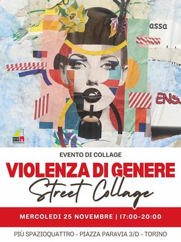
wed25novPaper and writingStreet collage workshop with Alice ArduinoWednesday 25 November, 17:00–20:00San Donato (TO) · Freewith Alice Arduino at Più SpazioQuattro wed25novOtherAppo: poetry meet-upWednesday 25 November, 18:00Vanchiglia (TO) · Freewith Approdo Poetico Torino at Spazio Costanza
wed25novOtherAppo: poetry meet-upWednesday 25 November, 18:00Vanchiglia (TO) · Freewith Approdo Poetico Torino at Spazio Costanza wed25novPaper and writingWine, vinyl and glue: collage and listeningWednesday 25 November, 18:30Aurora (TO) · Freewith Alice Mammola e Vanna Barboni at Jigeenyi
wed25novPaper and writingWine, vinyl and glue: collage and listeningWednesday 25 November, 18:30Aurora (TO) · Freewith Alice Mammola e Vanna Barboni at Jigeenyi- from26novPaper and writingCiclozine: zines against the nauseafrom Thursday 26 November to Thursday 24 June, 18:30–20:30San Salvario (TO) · Freewith Antro
- thu26novPaper and writingLiterary Speed Date: meeting through booksThursday 26 November, 18:30Trofarello (TO) · Freewith Pagina37
 fri27novJewelleryRitagli Preziosi: a collage broochFriday 27 November, 18:00–20:00Turinwith Punto fatto a mano
fri27novJewelleryRitagli Preziosi: a collage broochFriday 27 November, 18:00–20:00Turinwith Punto fatto a mano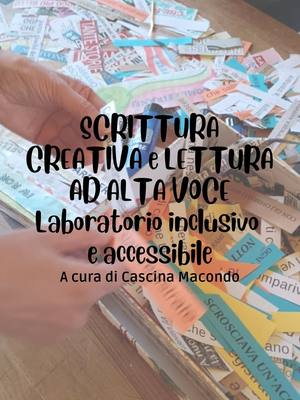
from16octPaper and writingCreative writing: reading and storytellingfrom Friday 16 October to Friday 28 May, every Friday, 18:30–20:00Barriera di Milano (TO) · Freewith Cascina Macondo at Bagni Pubblici- sat28novPaper and writingThe magic of calligraphy: brush-lettered greetingsSaturday 28 November, 10:00–11:30Barriera di Milano (TO) · 25 €with Cristina Pi at The Flairy Market
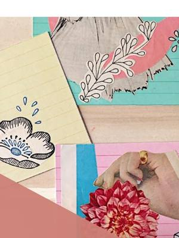
sat28novPaper and writingThe postcard of beautiful words: collageSaturday 28 November, 10:00–12:00Turinwith Soraia Aguirre at Spazio IAIA sat28novTextilesRicami Maldestri: embroidery on paperSaturday 28 November, 14:30–17:30Rivarolo Canavese (TO) · 50 €with Un peu sauvage at Uncipazzo
sat28novTextilesRicami Maldestri: embroidery on paperSaturday 28 November, 14:30–17:30Rivarolo Canavese (TO) · 50 €with Un peu sauvage at Uncipazzo sat28novFor familiesWish letter: a workshop for kidsSaturday 28 November, 15:00–17:00Barriera di Milano (TO)with My Caro Lab at The Flairy Market
sat28novFor familiesWish letter: a workshop for kidsSaturday 28 November, 15:00–17:00Barriera di Milano (TO)with My Caro Lab at The Flairy Market- sat28novJewelleryRitagli Preziosi: a collage pendantSaturday 28 November, 15:00–17:00Turinwith Punto fatto a mano
- sat28novPaper and writingBook club: photography booksSaturday 28 November, 16:30Fossano (CN)with Circolo Senza Margini at Ubik Fossano
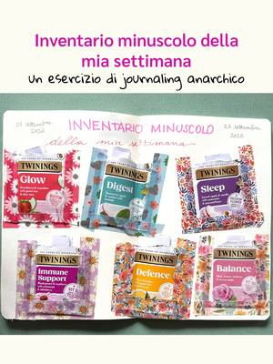
sun29novPaper and writingJournaling: pressed flower stickersSunday 29 November, 09:00–12:30Borgo Po (TO)with Anema e Storie e La Cerca Regali at TObed sun29novPaper and writingThanksgiving at the Dragonfly Inn: Christmas decorationsSunday 29 November, 11:00–15:00Rivoli (TO) · 45 €with Pancakes and Clouds
sun29novPaper and writingThanksgiving at the Dragonfly Inn: Christmas decorationsSunday 29 November, 11:00–15:00Rivoli (TO) · 45 €with Pancakes and Clouds sun29novPaper and writingOrigami intensive: a framed table lampSunday 29 November, 14:00–19:00San Salvario (TO) · 80 €with Origami Pop
sun29novPaper and writingOrigami intensive: a framed table lampSunday 29 November, 14:00–19:00San Salvario (TO) · 80 €with Origami Pop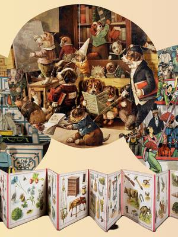
sun8novFor familiesPaper, folds and wonder: pop-up booksfrom Sunday 8 November to Sunday 29 November, 16:30Quadrilatero (TO) · 5 €with MUSLI- sun29novPaper and writingOff the margin: rewriting the endingsSunday 29 November, 17:00–19:00Collegno (TO) · Freewith Consiglio di Classe del Cuore at Leumann Hub
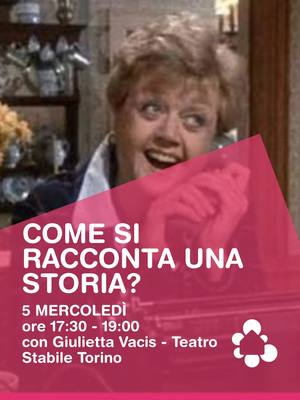
from2decPaper and writingHow to tell a story: creative writingfrom Wednesday 2 December to Wednesday 27 January, every Wednesday, 17:30–19:00Mirafiori (TO) · 50 € for 5 lessonswith Giulietta Vacis at Casa nel Parco- from2decPaper and writingBibliotherapy: reading to know yourselffrom Wednesday 2 December to Wednesday 9 June, 18:30–20:30San Salvario (TO) · Freewith Giulia Maria Calderoni at Antro
 sat5decJewelleryCreative Christmas: origami earringsfrom Saturday 5 December to Sunday 6 DecemberTurinwith Petites Révolutions
sat5decJewelleryCreative Christmas: origami earringsfrom Saturday 5 December to Sunday 6 DecemberTurinwith Petites Révolutions sat5decFor familiesBreakfast stories: kamishibai and coloursSaturday 5 December, 10:00–11:00Rivoli (TO) · 20 €with Officine Castagnero
sat5decFor familiesBreakfast stories: kamishibai and coloursSaturday 5 December, 10:00–11:00Rivoli (TO) · 20 €with Officine Castagnero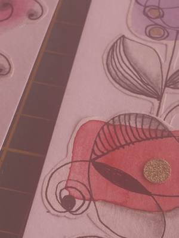
sat5decPaintingBookmark workshop: watercolour and zentangleSaturday 5 December, 15:30Borgomanero (NO) · 39 €with Creo Workshop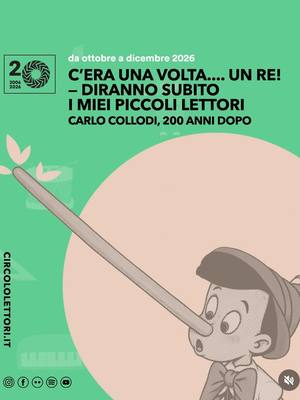
sat5decFor familiesPenne Selvagge: a Christmas storySaturday 5 December, 16:00–17:30Centro (TO) · 10 €with Merende Selvagge at Circolo dei Lettori sat5decTextilesRicami Maldestri: embroidered Christmas cardsSaturday 5 December, 16:00–18:00Biella (BI) · 40 €with Un peu sauvage at Camerasud
sat5decTextilesRicami Maldestri: embroidered Christmas cardsSaturday 5 December, 16:00–18:00Biella (BI) · 40 €with Un peu sauvage at Camerasud sun6decPaintingPaint & Cream Tea: Victorian puzzle purseSunday 6 December, 16:00–19:00Turin · 40 €with Laura Raduazzo at Smith’s British
sun6decPaintingPaint & Cream Tea: Victorian puzzle purseSunday 6 December, 16:00–19:00Turin · 40 €with Laura Raduazzo at Smith’s British- wed9decPaper and writingMani: Japanese bookbindingWednesday 9 December, 17:00–19:00Vanchiglietta (TO)with Elmofiore at Bocciofila Vanchiglietta
- wed9decPaper and writingCut-out words: poetry collageWednesday 9 December, 18:30–20:30San Salvario (TO) · Freewith Gianluca Montanino at Antro
 from12decPaper and writingThe Antro+1 notebook: creative writingfrom Saturday 12 December to Saturday 12 June, 10:30–12:30San Salvario (TO) · Freewith Alice Marcarino at Antro
from12decPaper and writingThe Antro+1 notebook: creative writingfrom Saturday 12 December to Saturday 12 June, 10:30–12:30San Salvario (TO) · Freewith Alice Marcarino at Antro sat12decPaper and writingBook Club 2.0: «Il nostro grande niente»Saturday 12 December, 18:30Vanchiglia (TO) · Freewith Book Club 2.0 at Libreria Fuori dal Tempo
sat12decPaper and writingBook Club 2.0: «Il nostro grande niente»Saturday 12 December, 18:30Vanchiglia (TO) · Freewith Book Club 2.0 at Libreria Fuori dal Tempo- fri18decPaper and writingRien ne va plus: chance and creativityFriday 18 December, 18:30–20:30San Salvario (TO) · Freewith Nica Costa at Antro
 sat19decPaper and writingLettering: beautiful writing for ChristmasSaturday 19 December, 09:30–12:00Cuneo (CN) · 35 €with Barbara Serafino at Atelier Crea-Arti
sat19decPaper and writingLettering: beautiful writing for ChristmasSaturday 19 December, 09:30–12:00Cuneo (CN) · 35 €with Barbara Serafino at Atelier Crea-Arti sun20decPaper and writingThe ABC of poetry: verses and drawingsSunday 20 December, 15:00–17:30Cenisia (TO) · 17 €with Serena Lou e Dodo
sun20decPaper and writingThe ABC of poetry: verses and drawingsSunday 20 December, 15:00–17:30Cenisia (TO) · 17 €with Serena Lou e Dodo dateTBDOtherCascina Roccafranca: this season’s coursesDate TBDMirafiori (TO)with Cascina Roccafranca
dateTBDOtherCascina Roccafranca: this season’s coursesDate TBDMirafiori (TO)with Cascina Roccafranca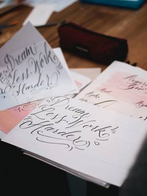
dateof your choicePaper and writingLettering course: creative calligraphyDate of your choiceTurin · 119 € for 6 lessonswith Kreative Club dateTBDPaintingNovel Academy: drawing and painting coursesDate TBDTurinwith Novel Academy
dateTBDPaintingNovel Academy: drawing and painting coursesDate TBDTurinwith Novel Academy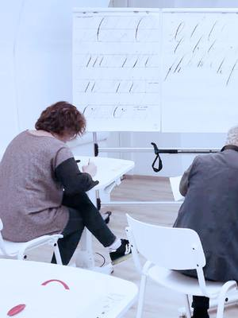
dateTBDPaper and writingCalligraphy course: historical scriptsDate TBDCentro (TO)with Enrico Graziano at Polo Le Rosine dateTBDTextilesStrappi e intrecci: journaling and weavingDate TBDCentro (TO)with Marilù Lab at Polo Le Rosine
dateTBDTextilesStrappi e intrecci: journaling and weavingDate TBDCentro (TO)with Marilù Lab at Polo Le Rosine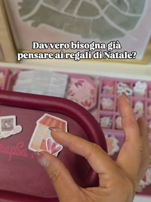
dateof your choicePaper and writingMappaBar: a made-to-measure map giftDate of your choiceSan Paolo (TO)with Scrapsa Lab dateTBDPaper and writingOrigami workshop: from paper to objectDate TBDSan Mauro Torinese (TO)with Golnaz Esmaeeli at upTOyou
dateTBDPaper and writingOrigami workshop: from paper to objectDate TBDSan Mauro Torinese (TO)with Golnaz Esmaeeli at upTOyou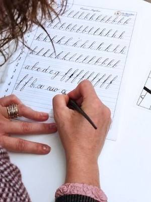
dateTBDPaper and writingCalligraphy workshop: English roundhandDate TBD, 10:00–18:00Centro (TO)with Enrico Graziano at Polo Le Rosine everysatPaper and writingCreative wellbeing: breakfast and collageEvery Saturday, 10:30–12:30Turin · 30 €with Kreative Club
everysatPaper and writingCreative wellbeing: breakfast and collageEvery Saturday, 10:30–12:30Turin · 30 €with Kreative Club everyfriPaper and writingWriting for passion: creative writingEvery Friday, 16:00–17:30Vallette (TO) · Pay what you likewith M. Storyteller Lab
everyfriPaper and writingWriting for passion: creative writingEvery Friday, 16:00–17:30Vallette (TO) · Pay what you likewith M. Storyteller Lab everysatPaper and writingOur best handwriting: a calligraphy lessonEvery Saturday, 16:30Quadrilatero (TO) · 5 €with MUSLI
everysatPaper and writingOur best handwriting: a calligraphy lessonEvery Saturday, 16:30Quadrilatero (TO) · 5 €with MUSLI- everywedFor familiesReading Buddies: reading togetherEvery Wednesday, 17:00–18:00Aurora (TO)with Amici di lettura at Cecchi Point
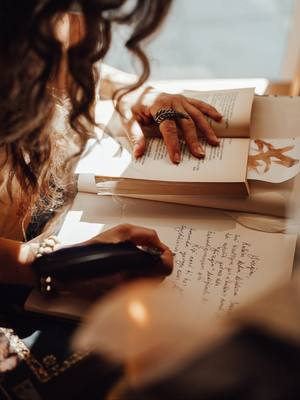
everythuPaper and writingWriting workshop: everyday lifeEvery Thursday, 18:00–20:00Barriera di Milano (TO) · 100 € for 8 sessionswith Bunker